Chapter 16: Land Revenue Systems
PS1793 created the zamindar class whose property the Cornwallis 86-93 Code protected; Ryotwari (Munro) is why Madras merged the DC's roles; the Madras Torture Commission 1855.
| Year | Paper | Topic | Answer |
|---|---|---|---|
| 2010 | Prelims | (Prelims 2010) — Cornwallis86-93's Separation of Judicial Powers from DC | (C) Lord Cornwallis was alarmed at the extent of power concentrated in the District Collector and felt that such a |
| 2010 | Prelims | (Prelims 2010) — Cornwallis86-93 as Founder of CCS | (C) Cornwallis86-93 |
| 1999 | Prelims | (Prelims 1999) — Indian Leader Dismissed from ICS | (B) Surendranath Banerji |
| 2017 | Prelims | (Prelims 2017) — Ryotwari Architects: Read and Munro, NOT Cornwallis') | (C) 2 and 3 |
| 2024 | Mains | Industrial Revolution + Decline of Indian Handicrafts | |
| 2022 | Mains | Sudden Spurt in Famines in Colonial India Since Mid-18th Century | |
| 2022 | Mains | Why Did EIC Armies Win Consistently? (Cross-chapter answer | |
| 2017 | Mains | Decline of Traditional Artisanal Industry Crippled the Rural | |
| 2014 | Mains | Critical Examination of British Economic Policies in India | |
Each pillar of the Company State was built in the same way: keep the Mughal frame at first, tighten control after a crisis, and open the doors to Indians only as far as cost or politics forced.
Read it like a film first. Then go to the notes: every fact below is expanded there.
Story spine: The EIC kept the Mughal frame for courts, services and police until a crisis (the 1770 famine) forced it to take control; Cornwallis 86-93 then built the structure, and Indians were let in only as far as cost or pressure from the Indian movement forced, leaving independent India with codified law, an organised civil service and a hierarchical police.
| Character | Role in the story | Hook |
|---|---|---|
| Muhammad Reza Khan | Naib Nazim who headed both the Diwani and the Nizamat in 1765-72; jailed 1772-74, reinstated at the SNA | One Man, Two Hats |
| Hastings 73-85 | Ended the Dual Government in 1772; DC as civil judge; Supreme Court 1774; police reform 1781 | The Direct Ruler |
| Cornwallis 86-93 | Code of 1793, DC without judicial power, CCS and UCS, Daroga system; 'authoritarian' | The Father of Three |
| Wellesley 98-05 | Set up Fort William College in 1800; restored police powers to zamindars in 1799 | The College Founder |
| Munro | His advice replaced the Bengal system in Madras in 1814 | The Ryotwari Adviser |
| Bentinck 28-35 | Binned the divisional courts; Persian replaced in 1835; encouraged some senior Indians | The Bin Man |
| Macaulay | Law Member and head of the 1834 Law Commission; chaired the 1854 Select Committee; coined Brown Sahibs | The Codifier |
| Satyendranath Tagore | First Indian to clear the CCS exam, 1864; brother of Rabindranath Tagore | The First Through |
| Lytton 76-80 | Brought lateral entry for loyal elite Indians instead of an exam in India | The Loyalists' Door |
| Lansdowne 88-94 | Executed the Aitchison report by executive order in 1892: CCS became ICS | The Renamer |
| Charles Napier | Conquered Sindh and set up the Sindh Police on the Irish model; did NOT head the 1860 commission | The Blueprint Giver |
| Canning 56-62 | Set up the 1st Police Commission (1860) under M.H. Court | The Commission Setter |
| M.H. Court | Headed the 1st Police Commission 1860; borrowed from the Sindh model | Court of Sindh |
| Fraser | Headed the 2nd Police Commission 1902-03 for Curzon 99-05: the Imperial Police cadre | The Cadre Builder |
| Key term | In plain words |
|---|---|
| SDA and SNA | Sadar Diwani Adalat (civil) and Sadar Nizamat Adalat (criminal): the two top courts of a province |
| Diwani and Nizamat | Diwani = finance, land revenue and civil justice; Nizamat = law and order and criminal justice |
| Kachari | The Zamindar's own revenue court at the local level |
| Mofussil | Rural areas and countryside districts below the district headquarters |
| Anglo-Muhammadan law | Islamic criminal law with British modifications, applied for about 70 years until the IPC 1860 |
| Court of Circuit | A criminal court that physically moves around its division, hearing cases in rotation |
| Covenanted (CCS) | Senior officers who signed a covenant with the Court of Directors in London; like today's Group A |
| Uncovenanted (UCS) | Junior officers hired locally in India; where Indians served; like today's Group B |
| WEMC | The western-educated middle class (1835 onwards), which demanded Indianisation of the services from 1860 |
| Lateral entry | Statutory Civil Service nomination of loyal elite Indians instead of an exam in India |
| Daroga | The Indian officer in charge of a thana (30 square miles) under Cornwallis 86-93, appointed by the DM |
| DC and DM | One officer, two hats: DC collects revenue; DM heads law and order (Section 144 of the CrPC) |
Remember it as Judge, Collector, Constable: each pillar kept the Mughal frame at first, tightened after a crisis, and let Indians in only as far as cost or politics forced.
| Year, marks | Question (short) | What this chapter gives | Where the flesh is | ||
|---|---|---|---|---|---|
| Mains 2024, 15 marks | How far was the Industrial Revolution in England responsible for the decline of handicrafts and cottage industries in India? | Only the administrative skeleton (Company State machinery) | As the handout says, de-industrialisation is in [[15 | Chapter 15: British Imperial Ideology]] and [[16 | Chapter 16: Land Revenue Systems]] |
| Mains 2022, 10 marks | Why was there a sudden spurt in famines in colonial India since the mid-18th century? | Dual Government 1765-72: poor revenue, law and order deteriorated, Great Bengal Famine 1770 killed about one-third of Bengal (Sections 2.3 and 4.2) | [[10 | Chapter 10: Plassey and Buxar]] has the 1770 famine; economic critique is in [[27 | Chapter 27: Moderates: Positives & Drain Theory]] |
| Mains 2022, 10 marks | Why did the EIC's armies, mostly Indian soldiers, win consistently against larger and better equipped Indian armies? | Nothing direct | As the handout says, Sepoy Army composition and grievances are in [[21 | Chapter 21: The Revolt of 1857]] | |
| Mains 2017, 15 marks | Examine how the decline of traditional artisanal industry crippled the rural economy | Nothing direct | [[15 | Chapter 15]], [[16 | Chapter 16]] |
| Mains 2014, 10 marks | Examine critically the various facets of the British economic policies in India | Nothing direct | [[27 | Chapter 27]] (Drain of Wealth) and [[16 | Chapter 16]] |
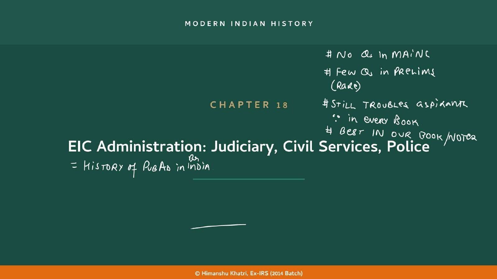
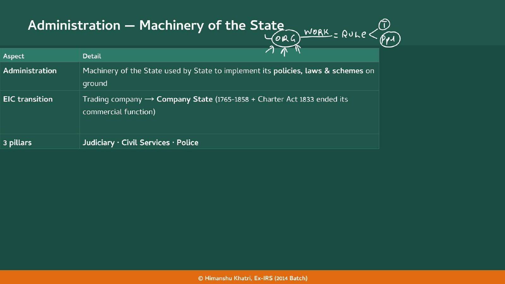
| No. | Question | Where the chapter answers it |
|---|---|---|
| 1 | Which law should apply: Hindu, Islamic or British? | Personal laws kept; Anglo-Muhammadan law; Supreme Court on British law |
| 2 | Should laws be written down or left to the judges' discretion? | Codification: Gentoo Code, Hedaya, Code of 1781, Cornwallis 86-93 Code |
| 3 | What hierarchy of courts? | 1772, 1773, 1793, Bentinck 28-35 |
| 4 | Should lawyers be allowed to represent parties? | Yes, from 1793 |
| 5 | Should judges be Indians or British? | All senior posts European under Cornwallis 86-93; lower posts opened from 1833 |
| 6 | In which language should courts function? | Persian replaced in 1835 |
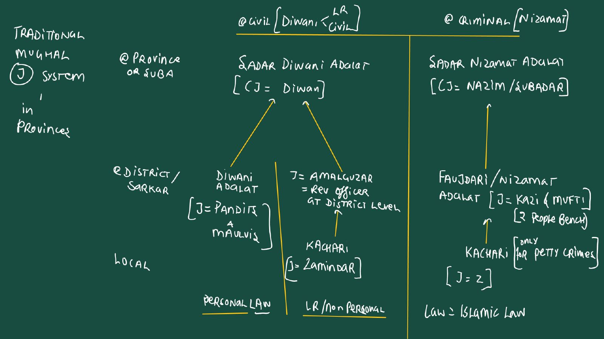
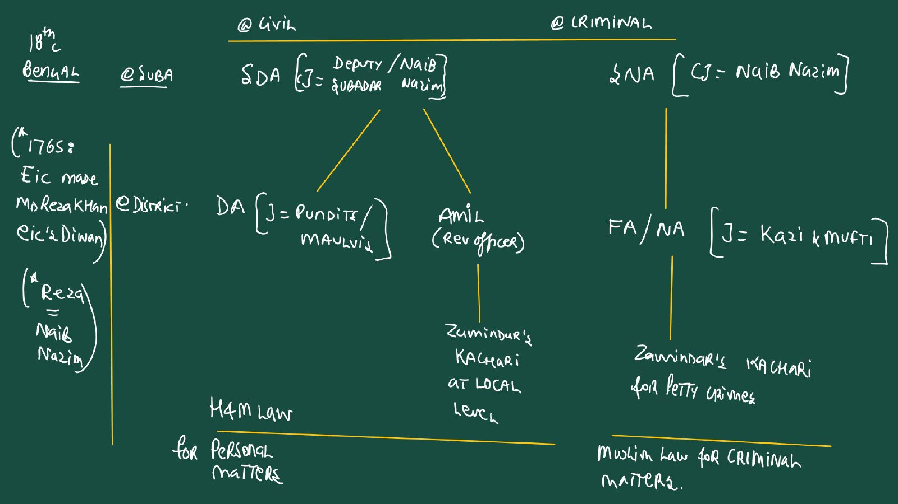
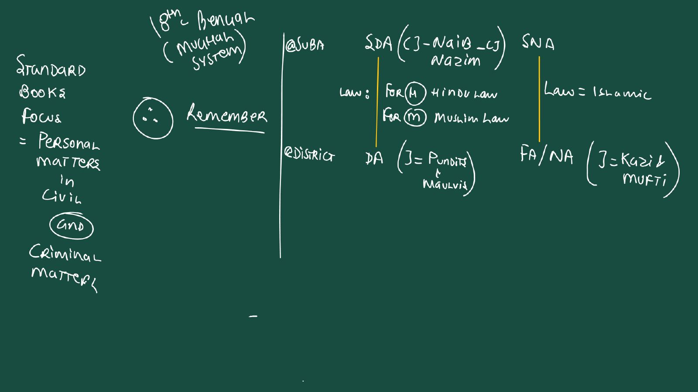
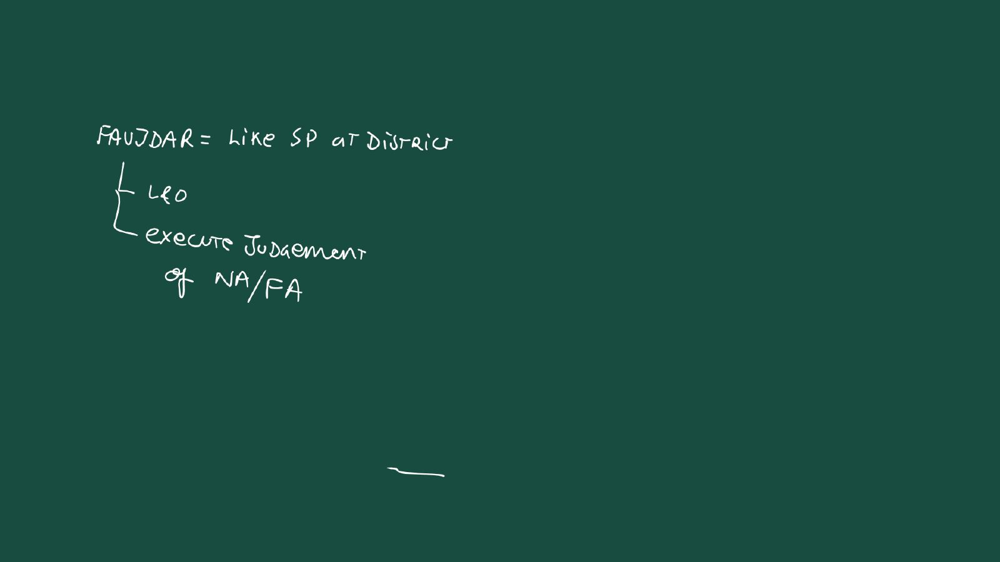
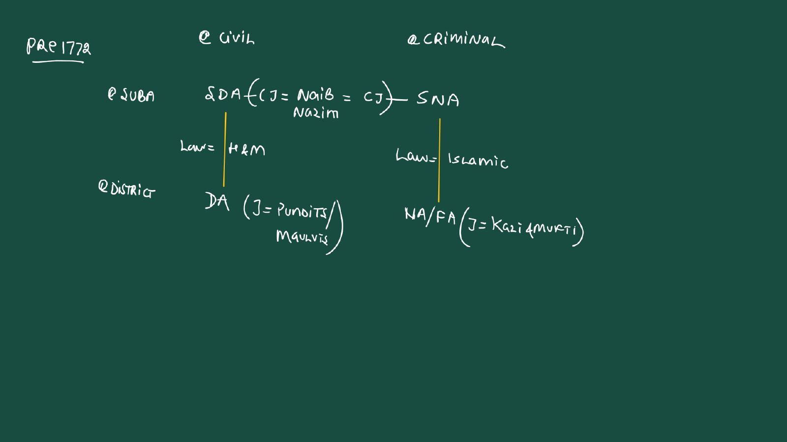
| Level | Civil (Diwani) | Criminal (Nizamat) |
|---|---|---|
| Suba (province) | Sadar Diwani Adalat (SDA), CJ the Diwan (Reza Khan held both chief justiceships) | Sadar Nizamat Adalat (SNA), headed by the Naib Nazim |
| District | Diwani Adalat: Pandits (Hindu cases) and Maulvis (Muslim cases); revenue side: Amil (Amalguzar) | Nizamat or Faujdari Adalat: Kazi judges, Mufti interprets, Faujdar executes |
| Local | Zamindar's Kachari: land revenue and non-personal disputes | Zamindar: petty crimes only; major crimes go straight to the district court |
| Law applied | Personal law (Hindu law, Muslim law) | Islamic law for all |
| Court | Judge | Law and detail |
|---|---|---|
| Diwani (civil) courts at the district | The British DC is the judge, assisted by Pandits and Maulvis | Personal laws continued in marriage and inheritance |
| Nizamat (criminal) courts at the district | Kazis and Muftis continue as judges, now supervised by the European DC | The British thought law and order too sensitive to replace fully |
| Sadar Diwani Adalat and Sadar Nizamat Adalat | Headed by the Governor (from 1773, the GG of Bengal) and his Council members | The top of both ladders passes to the Company |
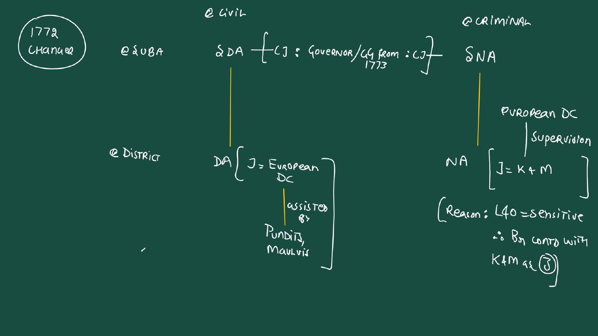
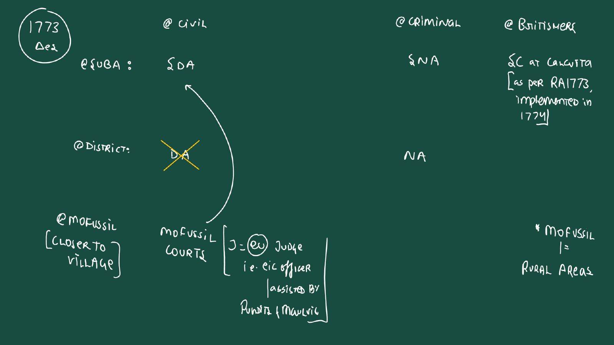
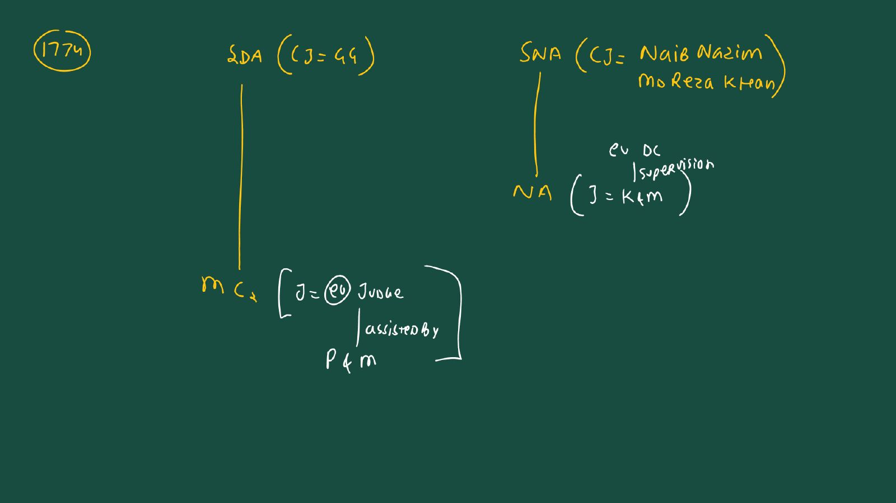
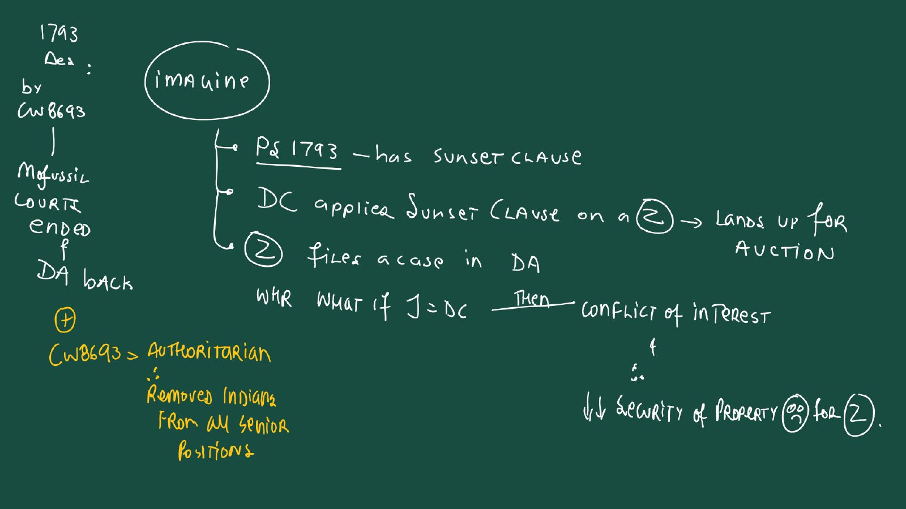
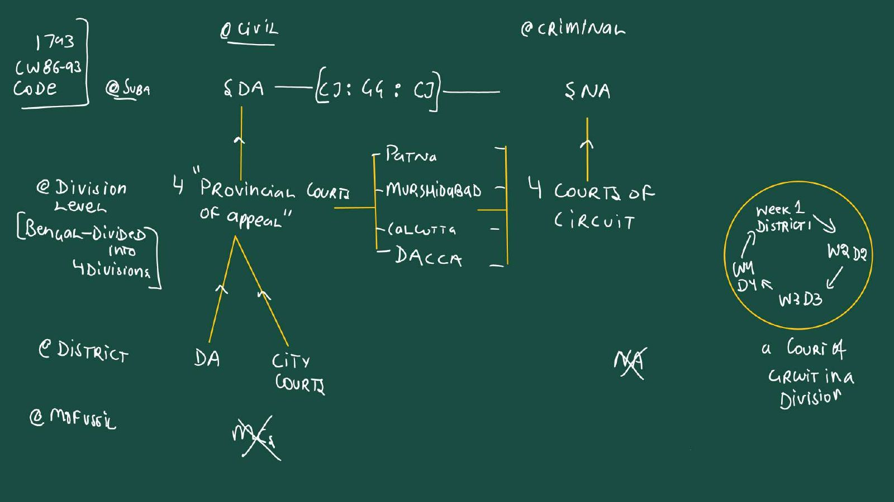
| Example | Islamic law (strict Hanafi) | British modification by Cornwallis 86-93 |
|---|---|---|
| A: weapon rule replaced by intent rule | Whether a killing was capital murder depended on the weapon used: a sharp iron instrument (sword) meant murder; strangling, drowning or a heavy stone was often a lesser crime (the instrument was not "designed" to draw blood) | He abolished this loophole: the intent of the accused decides, not the instrument. This matches the modern principle of mens rea |
| B: the end of "blood money" (Diyat) | Murder was largely a private dispute between families: the victim's heirs could pardon the killer for financial compensation (blood money, Diyat) | Relatives could no longer pardon a murderer. This set the principle that a major crime is an offence against the State, not just a private injury |
| C: abolition of mutilation | The standard punishment for serious theft or dacoity was amputation of a hand or foot | The EIC completely outlawed mutilation and replaced it with hard labour and rigorous imprisonment, typically 7 to 14 years |
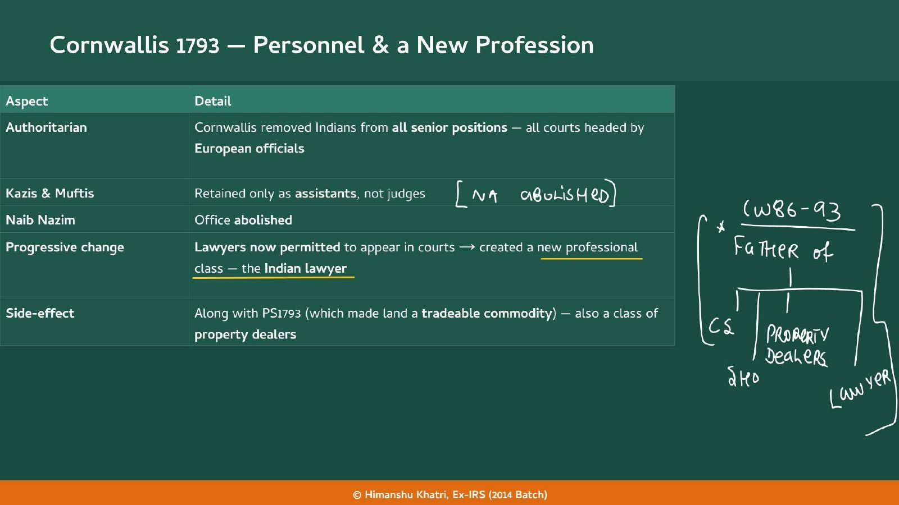
| Reason | What happened |
|---|---|
| 1. Separation of Powers (key reason) | The DC lost all judicial and magisterial powers. Earlier the Collector could resolve revenue disputes swiftly and informally on the spot; after 1793 every such dispute had to be formally filed in the Diwani Adalats |
| 2. Abolition of court fees | Cornwallis 86-93 initially abolished court fees to make justice "accessible," which instantly flooded the courts with genuine and frivolous suits. Fees were reimposed just 2 years later, in 1795 |
| 3. A legal profession | Formal recognition of lawyers (Vakils) and a rigid hierarchy of appeals: cases were deliberately prolonged and appealed |
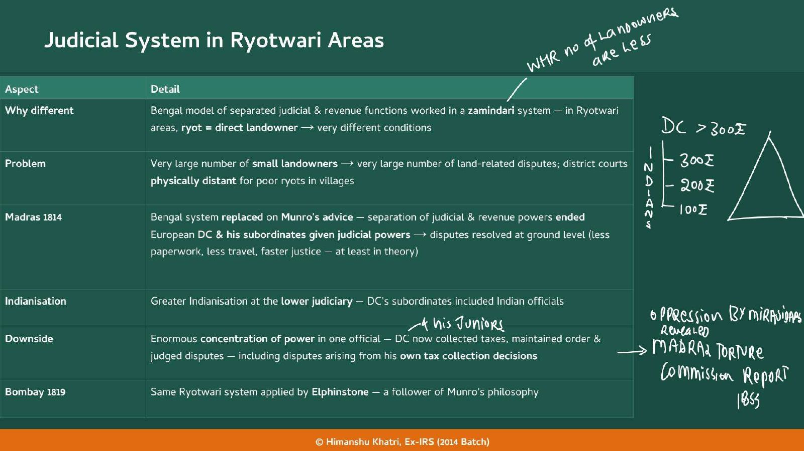
| Code | Year |
|---|---|
| Civil Procedure Code (CPC) | 1859 |
| Indian Penal Code (IPC) | 1860 |
| Criminal Procedure Code (CrPC) | 1861 |
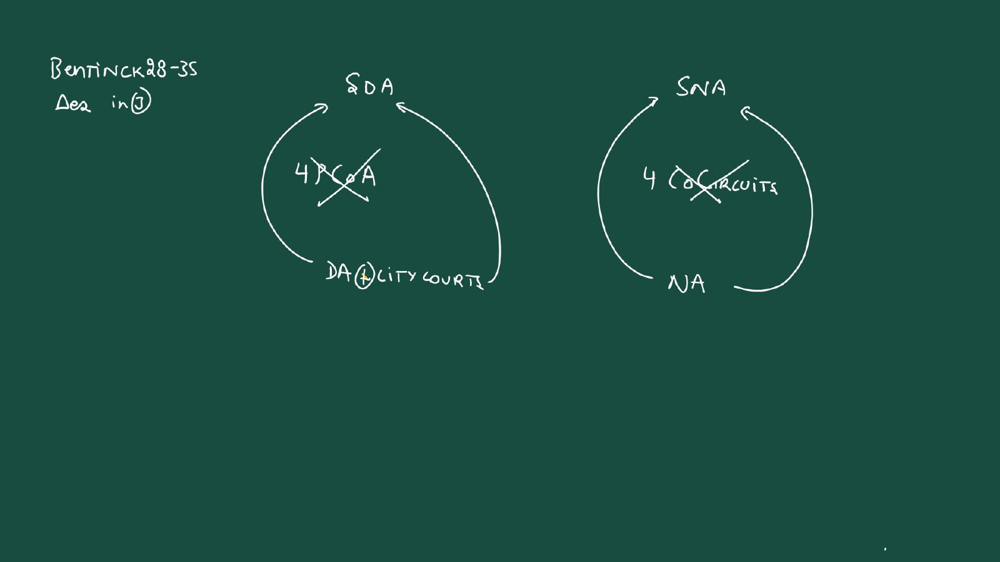
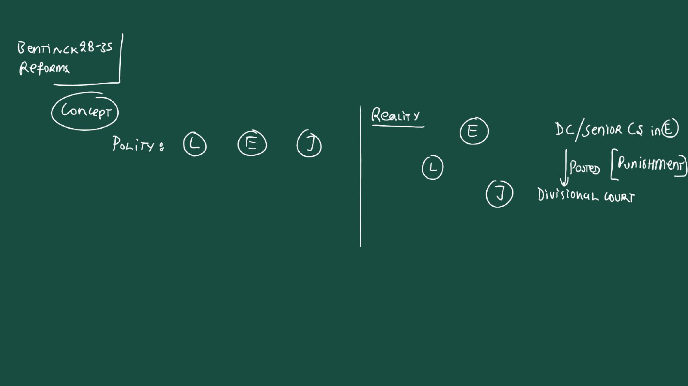
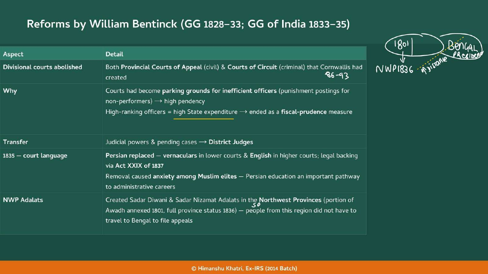
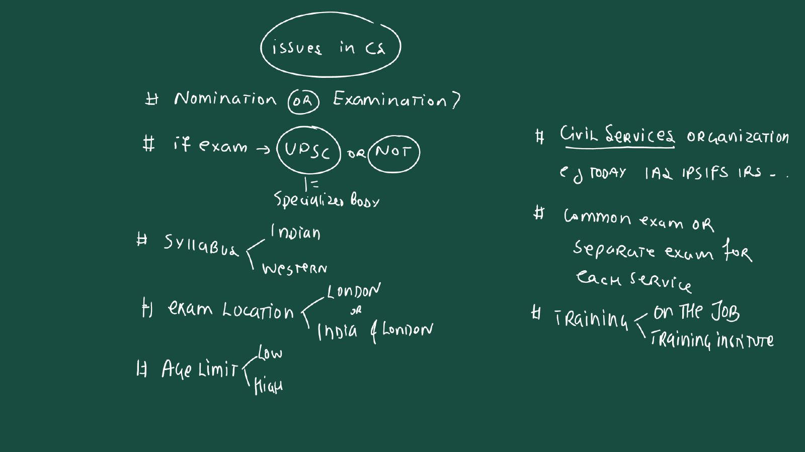
| Period | Training |
|---|---|
| Until 1800 | Essentially on the job |
| 1800-1806 | Fort William College, Calcutta, set up by Wellesley 98-05 for training in Indian laws, customs and languages |
| 1806-1858 | Haileybury College, London (East India College) |
| 1858 onwards | British universities |
| Aspect | Covenanted Civil Service (CCS) | Uncovenanted Civil Service (UCS) |
|---|---|---|
| Today's parallel | Like today's Group A | Like today's Group B |
| Who | Senior officers who signed a formal legal contract, a "covenant," with the EIC's Court of Directors in London before sailing to India | Junior officers hired locally in India by the GG or provincial governors |
| Pay and path | High defined pay, clear career path | Lower pay, less formal |
| Access | Under Cornwallis 86-93 reserved strictly for Europeans | The space where Indians were allowed to serve: at first very low-level clerical roles, then Deputy Collectors and Deputy Magistrates by the 1830s-40s as the empire grew and needed cheaper local administrators |
| What | Detail | ||
|---|---|---|---|
| DID | Two tiers | CCS plus UCS: the first proper structure | |
| DID | Strict seniority for promotions | London bosses could no longer push underqualified relatives over experienced officers (the slide calls it "Merit @ Promotions") | |
| DID | Massively higher salaries | To reduce the incentive to be corrupt | |
| DID | Curbed private trade by EIC officials | (see the Dastak and private trade story in [[10 | Chapter 10]]) |
| DID | Separation of Powers | DC stripped of judicial powers in 1793 | |
| DID NOT | Merit-based selection for entry | Entry stayed patronage-based: nomination by the EIC's Court of Directors in London, right until the Charter Act 1853 |
| Barrier | Detail |
|---|---|
| Age limit | The maximum age ranged from 18 to 23, kept deliberately low. 1859: the Crown cut the maximum entry age to 23. Then 22 in 1860, 21 in 1866, and 19 in 1876 (implemented 1878 so as not to hit aspirants already preparing) |
| Syllabus | Dominated by English Literature, designed to produce what Macaulay called "Brown Sahibs": Indians educated in English culture and values, culturally loyal to Britain |
| Venue | Held only in London |
| For an Indian candidate | Cost of travel to England; inferior preparation compared with British candidates; a syllabus that rewarded English cultural knowledge over Indian |
| First Indians through | 1864: Satyendranath Tagore (brother of Rabindranath Tagore) was the first Indian to clear the CCS exam. 1867: four more Indians cleared it |
| Recommendation | Detail |
|---|---|
| 20% of senior positions | Filled by promotion from the PCS |
| 40% | Indians via exam |
| 40% | Europeans via exam |
| 50:50 ratio | Between Indians and Europeans within 15 years via exam |
| Public Service Commission | As originally mandated by the GOI Act 1919, should be established |
| Structure | AIS (ICS, IPS, Indian Forest Service and so on), Central Services (Foreign Affairs, Customs, Railways and so on) and Provincial Services (Health, Education and so on) |
| Level | Police authority |
|---|---|
| Overall head | Naib Nazim (Deputy Subadar) |
| Rural districts (Sarkars) | Faujdars (Sarkar here means a sub-divisional unit, not government; the meaning differs by region) |
| Towns and urban areas | Kotwals |
| Villages | Zamindars held police duties and paid Village Watchmen from their own resources |
| Hat | Role | Mughal ancestor |
|---|---|---|
| DC (revenue) | Collects land revenue, manages government land, maintains land records, collects various taxes | The Mughal Diwani / Amalguzar function |
| DM (law and order) | Heads the district's criminal administration; coordinates with the SP to keep peace, prevent riots and issue executive orders such as Section 144 of the CrPC | The Mughal Nizamat / Faujdari function |
| Province | Year | Detail |
|---|---|---|
| Sindh | 1843 (annexed) | Charles Napier, the military general who conquered Sindh, set up the Sindh Police on the Irish Constabulary model immediately after conquest |
| Punjab | 1849 | Post-annexation |
| Bombay | 1853 | |
| Madras | 1859 |
| Post | In charge of | Reports to |
|---|---|---|
| Inspector General (IG) | The provincial police | The Governor / Lieutenant Governor (LG) |
| Superintendent of Police (SP) | The district police | The DC / DM |
| Sub-Inspector (SI) | The thana | The SP (not to the DC as earlier) |
| Year | Step |
|---|---|
| 1893 | First open competitive exam for senior police posts, held in London; top candidates became probationary Assistant Superintendents of Police under the Secretary of State for India |
| 1902-03 | Curzon 99-05 set up the 2nd Police Commission under Sir Andrew Fraser; report 1903. It organised superior police officers into one unified all-India cadre, the Imperial Police (IP) (informally the Indian Police); scheme implemented from about 1905 |
| (Fraser's package) | Provincial Police Service (PPS) created, with a new rank Deputy Superintendent of Police (DySP) that accommodated Indians at officer level, always junior to the British IP. CID set up in every province, plus a central intelligence bureau, the Department of Criminal Intelligence (1903), forerunner of today's IB. But the IP itself stayed closed to Indians: Fraser did NOT recommend appointing Indians to it |
| 1920 | Direct entry into the IP officially opened to Indians (simultaneous exams in England and India from 1921), largely a result of the Montagu-Chelmsford Reforms (GOI Act 1919) |
| By 1931 | Only 20% of SPs were Indians |
| From 1939 | More Indians posted as SP because British candidates were unavailable (recruited for World War II, 1939-45) |
| 1948 | The IP was administratively replaced by the Indian Police Service (IPS) by a Home Ministry resolution; statutory backing came from the All India Services Act, 1951 |
| Pillar | Inherited (Mughal) | Foundational reform | Mid-19th century consolidation | Modern legacy |
|---|---|---|---|---|
| Judiciary | Diwani Adalats (civil; Pandits and Maulvis) plus Nizamat Adalats (criminal; Kazis, Muftis, Faujdars) | Hastings 73-85's 1772 plan; 1774 Supreme Court at Calcutta; Cornwallis 86-93 Code 1793 with Anglo-Muhammadan law | Charter Act 1833 (Macaulay, Law Commission 1834) leading to CPC 1859, IPC 1860, CrPC 1861; High Courts Act 1861 (High Courts at Madras, Bombay, Calcutta 1862) | GOI Act 1935: Federal Court (1937), then Supreme Court of India 1950; CPC, IPC and CrPC replaced in 2024 by BNS, BNSS and BS |
| Civil services | Mansabdari nobility under Mughal patronage | Cornwallis 86-93 (1793): founder of CCS plus UCS; salaries raised; seniority for promotion | Charter 1853: exam mandated, Indians eligible (London only); ICS renamed by executive order 1892 (Lansdowne 88-94, per Aitchison 1887, NOT by ICA 1892) | Lee Commission 1923 leading to PSC 1926; GOI 1935 Federal PSC (1937) then UPSC 1950 (Article 378); AIS under Article 312 |
| Police | Naib Nazim to Faujdars (rural) and Kotwals (towns), plus Zamindars (villages) | Hastings 73-85's 1781 reforms; Cornwallis 86-93's Daroga System 1793 (failed through the Daroga-Zamindar nexus) | Irish Constabulary road-test (Sindh 1843 Napier, Punjab 1849, Bombay 1853, Madras 1859); 1st Police Commission 1860 (M.H. Court) leading to the Police Act 1861 (March 1861) | 2nd Police Commission 1902-03 (Fraser) leading to the Imperial Police (IP) cadre; 1948 Home Ministry resolution leading to the IPS; AIS Act 1951 plus Article 312 |
| Year | What happened |
|---|---|
| 1765 | Dual Government begins: EIC gets the Diwani, Nawab the Nizamat; Reza Khan heads both ★ |
| 1770 | Great Bengal Famine kills about one-third of Bengal; crime rises ★ |
| 1772 | Hastings 73-85 ends the Dual Government: DC as civil judge; Reza Khan jailed (to 1774) ★ |
| 1773 | 18 Mofussil courts; proper separation attempted; Regulating Act 1773 |
| 1774 | Supreme Court at Calcutta (British subjects, British law); Reza Khan reinstated ★ |
| 1775 | 11 Pandits compile Hindu law |
| 1776 | Gentoo Code (English translation) |
| 1778 | Islamic law effort (Al-Hidayah) |
| 1781 | Code of 1781: written orders compulsory (Bengal); Hastings 73-85 replaces Faujdars with English Magistrates |
| 1787 | Irish Constabulary effective in Ireland (the model for 1861) |
| 1791 | The Hedaya (English) |
| 1793 | Cornwallis 86-93 Code: DC loses judicial powers; Charter Act 1793; CCS and UCS; Daroga system; court fees abolished (back 1795) ★ |
| 1795 | Court fees reimposed |
| 1799 | Wellesley 98-05 restores police powers to zamindars |
| 1800 | Fort William College (to 1806); Supreme Court at Madras |
| 1802 | Daroga system extended to Madras (later abolished there) |
| 1806 | Haileybury College (to 1858) |
| 1814 | Madras: separation ended on Munro's advice |
| 1819 | Bombay: Ryotwari judicial system (Elphinstone) |
| 1823 | Supreme Court at Bombay |
| 1833 | Charter Act: single legislature, Law Member Macaulay; UCS opened to Indians ★ |
| 1834 | Law Commission under Macaulay |
| 1835 | Persian replaced in courts (Act XXIX of 1837) ★ |
| 1836 | Northwest Provinces get full province status |
| 1843 | Sindh annexed; Napier sets up the Sindh Police |
| 1849 | Punjab police on the Irish model |
| 1853 | Charter Act 1853: civil service exam mandated, Indians eligible; Bombay police ★ |
| 1854 | Macaulay's Select Committee; Civil Services Commission (London) |
| 1855 | First civil service exam; Madras Torture Commission report ★ |
| 1859 | CPC; age limit cut to 23; Madras police |
| 1860 | IPC; age limit 22; 1st Police Commission (M.H. Court) ★ |
| 1861 | CrPC; Police Act (March); Indian High Courts Act ★ |
| 1862 | High Courts at Madras, Bombay, Calcutta |
| 1864 | Satyendranath Tagore, first Indian to clear the CCS exam ★ |
| 1867 | Four more Indians clear it |
| 1876 | Age limit 19 (implemented 1878) |
| 1878 | Statutory Civil Services Act, Lytton 76-80 (rules 1879 on the slide) |
| 1887 | Aitchison Commission report (appointed 1886 by Dufferin 84-88) ★ |
| 1892 | Executive order: CCS to ICS, UCS to PCS (Lansdowne 88-94); not the ICA 1892 ★ |
| 1893 | First open police exam (London) |
| 1902 | 2nd Police Commission (Fraser) set up; report 1903; Imperial Police ★ |
| 1903 | Department of Criminal Intelligence (forerunner of IB) |
| 1912 | Islington Commission set up (report 1917: 25% Indians, no simultaneous exam) |
| 1920 | Direct entry to the Imperial Police opened to Indians (exams in both countries 1921) |
| 1922 | First simultaneous civil service exam in India ★ |
| 1923 | Lee Commission set up (report 1924: 20-40-40, 50:50) ★ |
| 1926 | Public Service Commission established |
| 1931 | Only 20% of SPs Indian |
| 1937 | Federal Court and Federal Public Service Commission begin working (GOI Act 1935) ★ |
| 1939 | More Indian SPs because British candidates went to WWII |
| 1947 | More than 50% of civil service posts Indianised |
| 1948 | Indian Police Service replaces the IP (Home Ministry resolution) |
| 1950 | Constitution: Supreme Court of India; UPSC under Article 378 (26 January) ★ |
| 1951 | All India Services Act: statutory backing for the IPS |
PS1793 created the zamindar class whose property the Cornwallis 86-93 Code protected; Ryotwari (Munro) is why Madras merged the DC's roles; the Madras Torture Commission 1855.
Regulating Act 1773 (Supreme Court, Governor to GG of Bengal), Charter Acts 1793, 1833 and 1853, GOI Acts 1858, 1919 and 1935 are the legal frames of every reform here.
Diwani versus Nizamat, Reza Khan, the Dual Government 1765-72 and the Great Bengal Famine 1770 are the starting point of Sections 2.3 and 4.2; Cornwallis 86-93's curb on private trade (Dastaks).
Western education from 1835 produced the WEMC that demanded Indianisation; Macaulay appears in both.
The 1892 ICS rename was an executive order, NOT part of ICA 1892.
The Indian Councils Act 1861 (August) is a different Act from the Police Act 1861 (March) and the Indian High Courts Act 1861.
Exam in India 1922, PSC 1926, 33% Indians, ICS split into AIS and Central services, IP opened 1920.
The 1857 revolt made the British insecure and hostile to Indianisation and created the Police Raj; the Sepoy Army answers sit there.
The economic critique that the Mains PYQs mapped to this chapter really need.
Read the question, answer in your head, then tap to check.
| What are the three pillars of EIC administration? | Judiciary, Civil Services and Police: the machinery of the State used to implement policies, laws and schemes on the ground. |
| What did the teacher write on the Chapter 18 title slide? | No Qs in Mains; few (rare) Qs in Prelims; it troubles aspirants in every book; best in our book/notes; "= History of PubAd in British India". |
| What are the six judicial questions the EIC faced? | Which law (Hindu, Islamic or British), written or discretion, hierarchy of courts, lawyers or not, Indian or British judges, language of courts. |
| Mughal Bengal civil versus criminal courts? | Civil: SDA (Diwan) down to district Diwani Adalat (Pandits, Maulvis) and Zamindar's Kachari for revenue, personal law. Criminal: SNA (Naib Nazim) down to Faujdari Adalat (Kazi, Mufti, Faujdar), Islamic law for everyone. |
| Who did what in a Mughal criminal court? | Kazi judged and pronounced the verdict; Mufti interpreted Islamic law; Faujdar (like an SP) secured the accused and executed the sentence. |
| Amil versus Amalguzar? | The same post, the district revenue officer: Amalguzar is the canonical Mughal term; the handout uses Amil for the corrupted 18th-century Bengal snapshot. |
| What did the 1772 plan of Hastings 73-85 do? | Ended the Dual Government; DC became civil judge (with Pandits and Maulvis); Kazis and Muftis stayed in criminal courts under the DC's supervision; Governor and Council headed the two Sadar Adalats; Reza Khan jailed 1772-74. |
| What happened in 1773 and 1774? | 1773: proper separation attempted and 18 Mofussil courts replaced district Diwani Adalats. 1774: Supreme Court at Calcutta for British subjects under British law (Madras 1800, Bombay 1823). |
| Gentoo Code and Hedaya? | Gentoo Code: 11 Pandits compiled Hindu law (1775), English translation 1776. Hedaya: Arabic Al-Hidayah translated into Persian, then English, 1791. Code of 1781: written orders compulsory, Bengal only. |
| Why did Cornwallis 86-93 separate the DC from the judge? | PS1793 created zamindars who needed trusted courts; a collector who taxes you must not judge your appeal (conflict of interest): separation of powers (Prelims 2010 (c)). |
| Cornwallis 86-93 Code 1793: civil structure? | District Diwani Adalats and City Courts, then Provincial Court of Appeal in each of four divisions (Patna, Murshidabad, Calcutta, Dacca), then the SDA (shifted to Calcutta); personal laws continue; PS1793 governs revenue disputes. |
| Cornwallis 86-93 Code 1793: criminal structure? | District Nizamat Adalats abolished; four Courts of Circuit (travelling in rotation) then Sadar Nizamat Adalat; Anglo-Muhammadan law until IPC 1860. |
| Three Anglo-Muhammadan changes? | Intent not weapon decides murder; Diyat ended, a crime is an offence against the State; mutilation outlawed, replaced by hard labour of 7 to 14 years. |
| What did Cornwallis 86-93 do to personnel? | Removed Indians from all senior posts, Kazis and Muftis only assistants, Naib Nazim abolished, lawyers allowed (a new Indian lawyer class); the teacher: father of CS, property dealers and lawyers. |
| Why did litigation rise after 1793? | DC lost judicial powers (disputes had to go to court), court fees abolished (back in 1795), recognised lawyers and a rigid appeal ladder (class slide only). |
| 1781 code versus 1793 code? | Issuing authority: 1781 by the GG (Bengal only, changeable by a later GG); 1793 by the British Parliament through the Charter Act 1793. |
| Why did Madras and Bombay merge DC and judge? | Ryotwari means many small landowners and many disputes with distant courts; Madras 1814 (Munro), Bombay 1819 (Elphinstone); gain: ground-level justice and Indianisation below; loss: one official holds everything. |
| What did the Charter Act 1833 do for the law? | GG of India became the single legislature; laws equal for Indians and Britons; Law Member Macaulay; Law Commission 1834; CPC 1859, IPC 1860, CrPC 1861; lower judicial posts opened to Indians. |
| What did Bentinck 28-35 change in courts? | Abolished the Provincial Courts of Appeal and Courts of Circuit (parking grounds, expense); powers to District Judges; Persian replaced in 1835 (vernaculars below, English above; Act XXIX 1837); NWP Sadar Adalats. |
| High Courts and Federal Court? | Indian High Courts Act 1861 led to High Courts (Madras, Bombay, Calcutta) in 1862; Calcutta merged SDA, SNA and the Supreme Court. GOI Act 1935 gave the Federal Court (1937), ancestor of the Supreme Court (1950). |
| CCS versus UCS? | CCS: Group A, covenant with Court of Directors in London, high pay, Europeans only under Cornwallis 86-93. UCS: Group B, hired locally by GG or governors, lower pay, where Indians served (clerks to Deputy Collectors). |
| What did Cornwallis 86-93 do and not introduce in the civil services? | Did: two tiers, seniority for promotion, higher pay, curbed private trade, separation of powers 1793. Did NOT: merit-based entry (nomination until Charter Act 1853). |
| Training of civil servants? | Until 1800 on the job; Fort William College 1800-06 (Wellesley 98-05); Haileybury 1806-58; British universities from 1858. |
| Charter Act 1853 and after? | Exam mandated, Indians eligible; 1854 Macaulay's committee and Civil Services Commission (London); first exam 1855; 1864 Satyendranath Tagore first Indian; 1867 four more. |
| How did the exam keep Indians out? | Age limit (23 in 1859, 22 in 1860, 21 in 1866, 19 in 1876 implemented 1878), English Literature syllabus (Brown Sahibs), London-only venue with travel cost and weaker preparation. |
| Statutory Civil Services Act? | Lytton 76-80: lateral entry by nomination of loyal elite Indians instead of an exam in India or a higher age; Act 1878 in the handout, 1879 on the slide; the teacher: "unimportant act". |
| Aitchison Commission? | Appointed 1886 by Dufferin 84-88, report 1887: drop Covenanted and Uncovenanted; ICS, PCS, Subordinate; implemented 1892 by executive order under Lansdowne 88-94 (not ICA 1892). |
| Islington, 1919 and Lee? | Islington (1912, report 1917): 25% Indians, no simultaneous exam. GOI Act 1919: exam in India 1922, PSC 1926, 33%. Lee (1923, report 1924): 20% promotion, 40% Indians, 40% Europeans, 50:50 in 15 years. |
| GOI Act 1935 and the UPSC? | Federal PSC 1937 and provincial PSCs; over 50% Indianised by 1947; UPSC under Article 378 on 26 January 1950; Articles 315 and 316 (commissions), 312 (All India Services). |
| Mughal policing in Bengal? | Naib Nazim (head), Faujdars (rural Sarkars), Kotwals (towns), Zamindars (villages, paid Village Watchmen). |
| Daroga system 1793? | Zamindars lose police powers; thanas of 30 square miles, each under an Indian Daroga appointed by the DM; DM supreme; chain Daroga, DM, GG and Council; failed through the Daroga-Zamindar nexus; Wellesley 98-05 restored zamindar police in 1799. |
| Police Act 1861? | Irish Constabulary model road-tested in Sindh 1843 (Napier), Punjab 1849, Bombay 1853, Madras 1859; 1st Police Commission 1860 (M.H. Court, not Napier); Act of March 1861: IG, SP, SI. |
| How was the police made a service? | 1893 first exam in London; Fraser Commission 1902-03 (Curzon 99-05): Imperial Police, PPS with DySP, CID, DCI 1903; 1920 IP opened to Indians; 1948 IPS; AIS Act 1951. |
| MAINS (title slide verdict): what should you do about Mains on this chapter? | The teacher says no Qs in Mains and the handout says Mains PYQs mapped here are economic-impact questions. Skeleton: intro (administration as the machinery of a Company State), body (three pillars changed under crisis, 1770 and 1857, or Indian pressure), closing (inherited institutions); take the economic flesh from Chapters 15, 16, 21 and 27. |
| MAINS 2022 (famines): what does this chapter add? | Skeleton: intro the Company's Dual Government (1765-72); body hands-off administration, poor revenue, law and order collapse, the Great Bengal Famine 1770 killing about one-third of Bengal, then Hastings 73-85's 1772 direct rule; closing: the crisis forced administrative reform. Economic causes: Chapters 10 and 27. |
| MAINS 2024 and 2017 (handicrafts and artisans): what does this chapter add? | Only the administrative skeleton (Company State machinery); the substance is in Chapters 15 and 16 (de-industrialisation, destruction of handicrafts), as the handout says. |
| MAINS 2022 and 2014 (EIC armies, British economic policies): what does this chapter add? | Nothing direct. Armies: Sepoy Army composition and grievances in Chapter 21; economic policies: Drain of Wealth in Chapter 27 and land revenue in Chapter 16. |
Tap the card to flip.